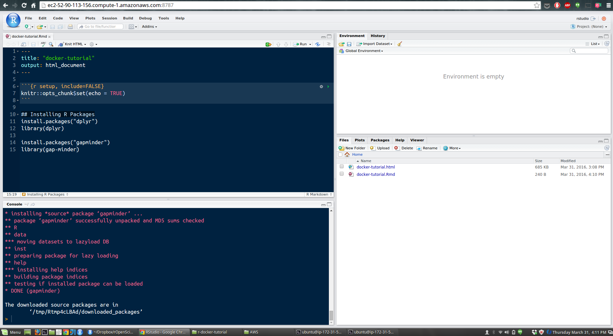

这是专门为具有 R 和 RStudio 知识的朋友设计的 Docker 教程。该介绍旨在帮助需要 Docker 进行项目的人们。我们首先解释 Docker 是什么以及为什么有用。然后，我们将详细介绍如何将其用于可复制的分析项目。
开始之前
在开始之前，请根据下面的指南安装需要的Docker：
什么是 Docker？为什么我要使用它？
学习目标
- 理解 Docker 的基本思想
- 了解为什么 Docker 非常有用
为什么要使用Docker
想象一下，你正在 R 中进行分析，然后将代码发送给朋友。你的朋友在完全相同的数据集上运行此代码，但结果略有不同。这可能有多种原因，例如操作系统不同，R 软件包的版本不同等。Docker 可以解决这样的问题。
可以将Docker容器视为你计算机内部的一台计算机。这个虚拟计算机的妙处在于你可以将其发送给你的朋友。当他们启动计算机并运行你的代码时，他们将获得与你完全相同的结果。
简单来说，你因为下面的一些原因使用 Docker：
- 它允许你解决从操作系统到R或latex版本上的依赖
- 它使你的分析可重复
还有一些 Docker 可以发挥用处的地方：
- 可移植性：由于 Docker 容器可以轻松地发送到另一台机器，因此你可以在自己的计算机上设置好所有内容，然后在更强大的机器上运行分析。
- 可共享性：你可以将 Docker 容器发送给任何知道如何使用 Docker 的人。
基本词汇
下面会经常出现镜像和容器这两个词。镜像的实例称为容器。镜像是虚拟计算机的设置。如果运行此镜像，将拥有它的一个实例，我们将其称为容器。可以有多个运行相同镜像的容器。
在 Docker 中启动 RStudio
学习目标
- 在 Docker 中启动 RStudio
- 将磁盘与 Docker 镜像链接
- 载入容器
安装
首先参考 install Docker 进行安装，没有必要完成链接中所有的教程，有需要再回看它们。
在 Docker 中启动 RStudio
要启动 Docker，我们需要做的第一件事是打开一个 Unix Shell。如果你在Mac或Windows 上，在最后一步，你安装了一个叫Docker快速启动终端;现在打开它——它看起来应该像一个普通的 shell 提示符(~$)，但实际上它指向的是一个 Docker 默认运行的 linux 虚拟机，而在本教程的其余部分，除非另有说明，你应该在这里完成所有操作。如果您在 linux 机器上，那么您可以使用旧的终端提示符。
在 Mac上，你也可以选择你的终端并配置 Docker使用。特别是如果你得到错误，不能连接到Docker守护进程。Docker 守护进程是否在此主机上运行?。在教程的某个时候，运行下面的命令可能会解决你的问题:
eval "$(docker-machine env default)"
接下来，我们将让Docker运行一个已经存在的映像，我们会使用来自Rocker的verseDocker镜像。它将允许我们在容器内运行RStudio，并且已经安装了许多有用的R包。
docker run --rm -p 8787:8787 rocker/verse
--rm、-p是允许你自定义如何运行容器的标志。-p告诉 Docker 你将使用一个端口在你的浏览器中看到 RStudio(我们随后指定为端口8787:8787), —rm 确保当我们退出容器时，容器被删除。如果我们不这样做，每次我们运行一个容器，它的一个版本将被保存到我们的本地计算机。这最终会导致大量磁盘空间的浪费，直到我们手动删除这些容器。稍后，我们将向你展示如何保存容器(如果你想这样做的话)。
如果你尝试运行一个没有在本地安装的 Docker 容器，那么Docker会自动在Docker Hub(一个在线的Docker 镜像存储库)上搜索该容器，如果它存在，就下载它。
上面的命令将导致 RStudio-Server 不可见地启动。要连接到它，打开一个浏览器，输入http://，然后加上你的 ip 地址，再加上:8787。如果您运行的是 Mac 或 Windows 机器，您将在启动 Docker Quickstart终端时出现在终端中的第一行文本中找到 ip 地址。例如，你应该会看到:
## .
## ## ## ==
## ## ## ## ## ===
/"""""""""""""""""\___/ ===
~~~ {~~ ~~~~ ~~~ ~~~~ ~~~ ~ / ===- ~~~
\______ o __/
\ \ __/
\____\_______/
docker is configured to use the default machine with IP 192.168.99.100
For help getting started, check out the docs at https://docs.docker.com
你应该在浏览器中键入 URL http://192.168.99.100:8787
如果你在一台 Linux 机器上运行，你可以使用 localhost 作为 ip 地址，例如：http://localhost:8787
这将会将你导向 RStudio 登录界面，使用下面的信息登录：
username: rstudio password: rstudio
现在你就可以在浏览器中使用 RStudio 工作了，就像你使用 Rstudio 桌面版一样。
下面是一个截图示例：

现在尝试查看虚拟计算机的文件(docker容器)。点击File -> Open File,你将看到当前没有文件。原因是这个镜像现在没有文件。然后打开一个新的R脚本，例如：file -> New file -> R Script，然后j键入以下脚本，并保存：
# make x the numbers from 1 to 5, and y the numbers from 6-10
x <- 1:5
y <- 6:10
# plot x against y
plot(x, y)
如果您现在再次查看您的文件，您将看到建立的脚本文件。
因为我们刚才启动镜像时使用了 --rm 标记，所以在这个机器上创建的任何东西在关闭后都会消失。你可以试试将上面的代码保存为一个文件，然后关闭浏览器，在终端上用 Ctrl+C 关掉容器，然后重新启动容器，看是否创建的文件是否依然存在。
将磁盘与 Docker 镜像连接以便于访问和保存数据文件
这就引出了一个问题，如果在退出容器时删除了容器，我们如何保存我们的工作?一种解决方案是将卷(例如本地硬盘驱动器)链接到容器，这样您就可以访问那里的数据并在那里保存数据。
这一次当我们启动容器时使用 -v 标记指定我们项目的根目录，如下所示（你的目录可能有所不同），:左边是你本地计算机的路径，右边是容器里的路径，一般以 /home/rstudio/ 开始（这个镜像已经默认创建了用户名 RStudio 和进行了相关配置）
docker run --rm -p 8787:8787 -v /Users/tiffanytimbers/Documents/DC/r-docker-tutorial:/home/rstudio/r-docker-tutorial rocker/verse
然后你就可以再一次的在浏览器中打开Rstudio
这一次你在 Docker 容器中启动 RStudio 后，你可以查看到下面映射的文件目录。然后就可以载入数据进行分析工作了：
# load gapminder data from a csv on your computer
gap5yr <- read.csv(file = 'data/gapminder-FiveYearData.csv')
画一个分析图
# load ggplot library
library(ggplot2)
# plot GDP against life expectancy
qplot(gap5yr$lifeExp, gap5yr$gdpPercap)
# save the plot
ggsave(filename = 'data/GDP_LifeExp.pdf')
让我们将脚本保存为 plot_GDP_LifeExp.R，然后关闭容器，看在本地目录下是否能看到脚本和绘图文件。
小结
在这节课中，我们学习了如何启动Docker容器来允许我们在浏览器中运行RStudio。我们知道在运行Docker时使用-rm标志会使容器短暂;这意味着它会在我们关闭容器后被自动删除。我们这样做是为了不在我们的机器上积累大量的容器和浪费空间。我们还了解到，如果我们想访问和保存数据、脚本和任何其他文件，我们可以将笔记本电脑的一个卷连接到Docker容器。
我们使用的容器已经安装了R、RStudio和几个有用的R包。在后面的课程中，我们将学习如何修改这个容器来安装新的包，以及在哪里可以找到对我们的工作可能有用的其他Docker容器。
安装 R 包
在 RStudio 内安装 R 包
您可以通过使用install.packages()在浏览器中使用RStudio安装R包，就像在桌面RStudio上一样。让我们像以前一样启动一个verse Docker容器来运行RStudio，并尝试安装gapminder包，加载它并查看数据。
# install package
install.packages('gapminder')
# load library
library(gapminder)
# peek at data
head(gapminder)
太好了！现在我们已经安装好包并可以进行工作。但是等等，如果我们退出了容器会发生什么？安装的包会被删除，因为我们没有保存这个版本的 Docker 镜像。我们需要创建一个镜像，这样当利用它创建一个新的容器时，gapminder 包也已经安装好了，可以直接使用。
为了做到这一点，我们需要运行 docker commit（类似 git commit）保存修改。记住，这个操作需要在关闭容器前运行，一般我们另外打开一个终端进行这个操作。
我们可以使用下面的命令进行查看（类似 linux ps 命令）：
docker ps
输出应该类似下面展示，哈希值记录了容器 ID：
4a6a528b35da rocker/verse "/init" 2 minutes ago Up 2 minutes 0.0.0.0:8787->8787/tcp silly_meninsky
现在我们在新的终端中运行下面命令，并记录修改信息：
docker commit -m "verse + gapminder" 4a6a528b35da verse_gapminder
为了保存这个Docker映像，我们必须提供一个提交消息来描述我们对映像所做的更改。我们通过传递-m标志，后跟引号中的消息来实现这一点。我们还需要为这个版本的容器(这里是4a6a528b35da)提供特定的散列。最后，我们还为新映像提供一个新名称。我们将这个新图像命名为verse_gapminder。
我们可以看到，我们现在有两个Docker镜像保存在我们的电脑上
docker images
REPOSITORY TAG IMAGE ID CREATED SIZE
verse_gapminder latest bb38976d03cf 57 seconds ago 1.955 GB
rocker/verse latest 0168d115f220 3 days ago 1.954 GB
你可以通过从每个映像运行Docker容器来测试它是否工作。您将发现Gapminder包只安装在verse_gapminder映像上，而没有安装在rocker/verse映像上。
安装 R 系统外部依赖
许多R包都有R外部的依赖关系，例如GSL、GDAL、JAGS等等。要在正在运行的rocker容器上安装这些文件，您需要进入docker命令行(在一个新的终端窗口中)并键入以下命令:
docker ps # find the ID of the running container you want to add a package to
docker exec -it <container-id> bash # a docker command to start a bash shell in your container
apt-get install libgsl0-dev # install the package, in this case GSL
如果您在运行apt-get install libgsl0-dev时报错，尝试先运行apt-get update。
为了保存安装的依赖，依旧需要进行修改的提交：
docker commit -m "verse + gapminder + GSL" <container id> verse_gapminder_gsl
现在，您可以进入输入docker exec命令的终端窗口，并通过输入exit关闭docker容器
对 Docker Hub 推送或拉取镜像
学习目标
- 理解镜像来自哪里
- 从 Docker Hub 拉取镜像
- 推送镜像到 Docker Hub
从 Docker Hub 获取镜像
Docker Hub 是一个存储 Docker 镜像的地方，当我们运行下面的命令时，软件首选检查镜像是否存在于你的计算机上。如果不存在，它会自动去 Docker Hub 搜索和下载。
docker run --rm -p 8787:8787 rocker/verse
如果你想要从 Docker Hub 上拉取镜像而不运行它，可以使用命令：
docker pull rocker/verse
将镜像放到 Docker Hub
想象一下如果你自己创建了一个镜像，然后想要与其他人分享，你可以在 https://hub.docker.com/ 创建一个账号。验证完邮箱之后，你就可以将你的镜像上传了：
- 登录 https://hub.docker.com/
- 点击创建仓库
- 设置名字后点击创建
- 使用命令行登录 Docker Hub
docker login --username=yourhubusername --email=youremail@company.com
当提示输入你的密码。如果一切正常，您将得到一个类似的消息
WARNING: login credentials saved in /home/username/.docker/config.json
Login Succeeded
- 检查镜像的 ID
docker images
然后你会看到类似下面的输出：
REPOSITORY TAG IMAGE ID CREATED SIZE
verse_gapminder_gsl latest 023ab91c6291 3 minutes ago 1.975 GB
verse_gapminder latest bb38976d03cf 13 minutes ago 1.955 GB
rocker/verse latest 0168d115f220 3 days ago 1.954 GB
然后标记你的镜像
docker tag bb38976d03cf yourhubusername/verse_gapminder:firsttry
这里镜像 ID 必须匹配，fisttry 是标签，一般选择一些容易识别的标签。
- 推送你的镜像：
docker push yourhubusername/verse_gapminder
现在所有人都可以使用你的镜像了！
保存和加载镜像
将镜像推送到 Docker Hub 非常使用，但它有些缺点：
- 受带宽限制
- 推送意味着发布（私密需要额外付费）
- 当在一些计算节点上工作时，如果每一次你都拉取 Docker Hub 的镜像，速度会很慢
解决方案的在本地对你的镜像进行存档，这样你可以在需要的时候轻松载入。
为了这一目的，你可以使用 docker save 命令。例如，让我们保存一个我们制作的verse_gapminder docker镜像的本地副本:
docker save verse_gapminder > verse_gapminder.tar
如果我们想要从存档中载入镜像，使用下面的命令：
docker load --input verse_gapminder.tar
Dockerfile
前面我们学习了一个可以在 Docker 中运行 RStudio 的基础镜像，学习如何使用 docker commit 修改镜像的内容。这是一个非常棒的技术，它让我们可以进行重复，但如果我们想要更简单地修改镜像中的内容，并有一份清晰的记录，该怎么办呢？这在维护运行环境时非常有用，这些环境可能会随着项目的变化而发展，Dockerfiles可以帮助维护这些环境。
Dockerfiles是一组关于如何向基本映像添加内容的指令。它们在一系列层中构建自定义图像。在一个名为Dockerfile的新文件中，放入以下内容:
FROM rocker/verse:latest
这告诉 Docker 以 rocker/verse 基础镜像作为开始。FROM 命令必须是第一条指令。
接下来，让我们基于该基础镜像添加一层，让 gapminder 提取安装好可以直接使用：
RUN R -e "install.packages('gapminder', repos = 'http://cran.us.r-project.org')"
RUN 命令可以执行 Shell 命令，这个例子中，我们直接通过 Shell 调用包安装命令。保存你的 Dockerfile，返回终端，现在我们可以利用下面的命令构建一个自定义镜像：
docker build -t my-r-image .
-t my-r-image 指定镜像名字（要小写），. 指定构建镜像所需要的资源来源，这里指当前目录。查看镜像：
docker images
你应该在列表中看到my-r-image。启动你的新镜像:
docker run --rm -p 8787:8787 my-r-image
在 RStudio 控制台中尝使用gapminder：
library('gapminder')
gapminder
现在，gapminder已经被预装好了，可以进入你的新docker镜像了。
有时候我们想要添加一些静态文件到镜像中，这可以使用 ADD 命令：
ADD data/gapminder-FiveYearData.csv /home/rstudio/
重新建立你的Docker镜像
docker build -t my-r-image .
然后再次启动它
docker run --rm -p 8787:8787 my-r-image
在浏览器中返回到RStudio, gapmin - fiveyeardata .csv将出现在RStudio可见的文件中。通过这种方式，我们可以捕获文件作为Docker映像的一部分，因此它们始终与映像的其余部分处于完全相同的状态。
高级技巧：缓存层
在构建和重构建你的 Docker 镜像时，你可能注意到了类似下面的输出：
Step 2 : RUN R -e "install.packages('gapminder', repos = 'http://cran.us.r-project.org')"
---> Using cache
---> fa9be67b52d1
注意到使用的是命令的缓存版本。当你重新构建映像时，Docker 会检查该映像的以前版本，以查看以前是否执行了相同的命令；每一个步骤都被保存为一个单独的层，Docker 非常聪明，可以重用那些层，如果它们没有改变，并且和前面一样的顺序。因此，一旦你弄清楚了你的安装过程的一部分(特别是如果它是一个缓慢的部分)，把它放在你的Dockerfile的顶部，不要在这些行上面或中间放任何东西，特别是那些经常变化的东西;这可以大大加快你的构建过程。
简单的说，重构建只修改有变动的步骤，如果很多命令没有问题，尽量放到顶部。
共享你的所有分析
现在我们已经学习了如何使用dockerfile，我们可以将所有分析发送给协作者。我们将共享一个包含运行分析、数据和分析所需的所有依赖项的映像。
我们将通过dockerfile构建此镜像。我们以基础的verse rocker镜像开始。这一次我们希望拥有一个特定的R版本(3.3.2)。可以通过给镜像加上标签实现。这对于我们重现是非常有用的。
FROM rocker/verse:3.3.2
作为我们分析的一部分，我们将使用gapminder数据。我们需要将这个包安装到docker映像中。让我们通过修改dockerfile来安装这个包。
RUN R -e "install.packages('gapminder', repos = 'http://cran.us.r-project.org')"
现在我们只需要进行数据分析并将其添加到dockerfile中。
为了进行分析，我们将创建一个预期寿命与人均gdp的图表。
在一个新的R脚本上，让我们写以下分析内容:
library(ggplot2)
library(gapminder)
life_expentancy_plot <- ggplot(data = gapminder) +
geom_point(aes(x = lifeExp, y = gdpPercap, colour = continent))
我们将把这个脚本保存为analysis.R并将其添加到dockerfile中。
ADD analysis.R /home/rstudio/
现在，我们可以构建映像并检查是否有想要与协作者共享的所有内容。
docker build -t my-analysis .
我们的镜像将出现在镜像列表当中
docker images
启动你的新镜像，检查你所有想要的信息:
docker run -dp 8787:8787 my-analysis
所有的信息都包含在镜像里了。
现在我们可以把我们的分析推到dockerhub。
在DockerHub上点击创建仓库，选取一个仓库名字（例如：gapminder_my_analysis）和一个描述，点击创建
从命令行登录到Docker Hub
docker login --username=yourhubusername --email=youremail@company.com
登录认证后检查本地的镜像ID：
docker images
你将会看到类似的信息
REPOSITORY TAG IMAGE ID CREATED SIZE
my-analysis latest dc63d4790eaa 2 minutes ago 3.164 GB
标记你的镜像
docker tag dc63d4790eaa yourhubusername/gapminder_my_analysis:firsttry
将映像推到创建的存储库
docker push yourhubusername/gapminder_my_analysis
现在每个人都可以使用你的镜像。
其他人可以使用以下命令获取你的镜像
docker pull yourhubusername/gapminder_my_analysis:firsttry
现在他们就拥有了你所有的信息。